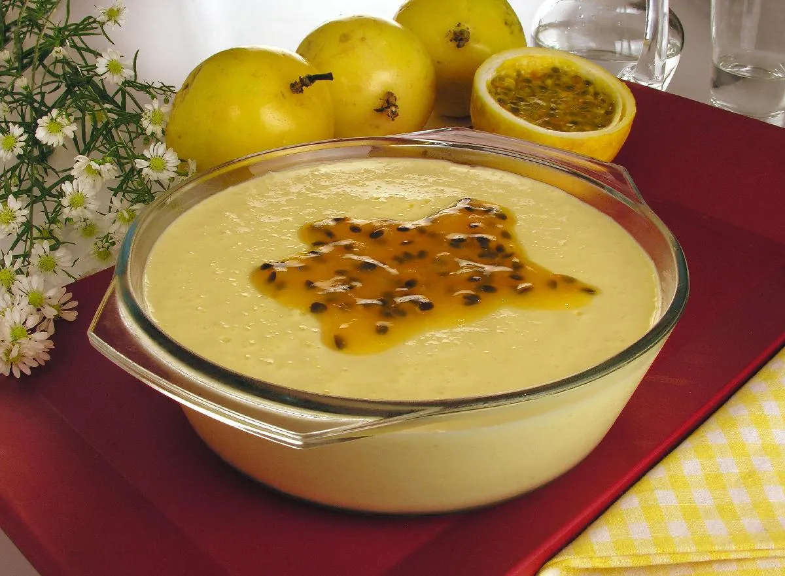

Passion Fruit Mousse

Description
This is the easiest way ever to produce a creamy and deliciously out-of-this-world mousse! Lemon or concentrated orange juice may also be used in place of the passion fruit.
Ingredients
- 1 cup whipping cream
- ½ cup frozen passion fruit juice concentrate
- 1 cup sweetened condensed milk
Steps
- Pour the whipping cream, condensed milk, and passion fruit juice into a blender.
Blend on low until light and fluffy, 30 seconds to 1 minute.
- Pour into a serving bowl or dessert dishes, and refrigerate at least 30 minutes before serving.